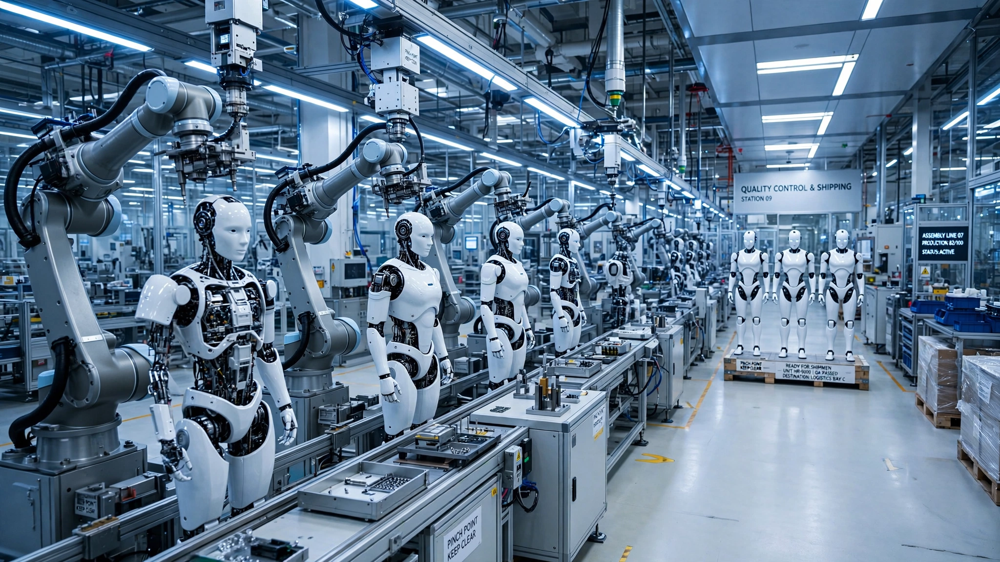

The World Built 16,000 Humanoid Robots Last Year. Replacing the Warehouse Workforce Would Take 38 Years at Full Production.
Three Chinese companies shipped more humanoid robots in 2025 than every American manufacturer combined has ever produced. An original hourly-cost decomposition reveals these machines already undercut warehouse labor by 7x to 10x, yet an aggregate production-capacity analysis shows the entire global factory base, running flat out, would need until the 2060s to replace just America's warehouse and logistics workers. The bottleneck is not economics — it is manufacturing.

The world shipped 16,000 humanoid robots in 2025, according to Counterpoint Research, marking the first year global installations climbed into five figures and confirming that an industry which barely existed in 2023 had entered what market analysts now cautiously call "early mass production." China accounted for more than 80% of those shipments, with Shanghai-based AgiBot alone delivering 5,168 units to claim a 39% global market share that would be dominant in any sector, per research firm Omdia.
On July 3, UBTECH launched the UWORLD U1 on JD.com, billing it as the world's first mass-produced, full-size humanoid robot available to consumers, while Tesla confirmed it had stopped producing the Model S and Model X at its Fremont, California plant to convert that capacity into a humanoid robot manufacturing line for Optimus, and 1X Technologies began shipping from its newly opened Hayward, California factory with a stated target of 100,000 NEO units by 2027.
Those are extraordinary headlines, but the numbers underneath them tell a more complicated story in which the economics of humanoid labor are already devastating for certain warehouse and logistics jobs while the production math, when you aggregate every announced factory capacity on Earth and run the division against America's 1.8 million warehouse workers, makes mass workforce displacement a problem for the second half of the century rather than the next quarterly earnings call.
The Hourly Cost Nobody Has Published
Start with a $20,000 humanoid, the price 1X Technologies is charging for its NEO consumer robot and roughly the figure Tesla's Elon Musk has targeted for Optimus at scale, and assume a conservative three-year operational lifespan alongside 6,000 working hours per year, which is what running a robot on two of three daily shifts buys you in a facility that operates around the clock.
Capital cost per hour: $20,000 divided by 18,000 lifetime hours equals $1.11, which is roughly what a large convenience store coffee costs and what an employer would pay for approximately four minutes of minimum-wage labor.
Electricity adds almost nothing to the equation because a humanoid draws roughly 400 to 600 watts during active operation, and at the US commercial electricity rate of $0.0861 per kilowatt-hour reported by the EIA in April 2026, that translates to $0.04 to $0.05 per hour of continuous use.
Maintenance is the wild card, because no humanoid has operated commercially long enough to generate actuarial maintenance data, though the International Federation of Robotics estimates industrial robot maintenance typically runs 10% to 15% of the purchase price annually. At 12% of $20,000, that yields $2,400 per year, or $0.40 per hour across 6,000 annual hours, but for a humanoid with its more complex joints, biped gait, and dexterous manipulator hands, a reasonable premium doubles that estimate to $0.80 per hour.
Supervision and integration round out the cost, because even a highly autonomous humanoid needs some degree of human oversight in any commercial deployment, and in structured warehouse settings a single human supervisor can monitor 8 to 12 robots according to estimates from Agility Robotics' Digit deployment at Amazon, which at $25 per hour fully burdened adds $2.08 to $3.13 per robot-hour, with a midpoint of $2.60.
The total all-in hourly cost comes to $4.56.
Now compare that figure to the cost of the worker it replaces. According to the Bureau of Labor Statistics, the average US warehouse and storage worker earns $19.86 per hour in base wages, and once you add employer costs for benefits, payroll taxes, workers' compensation insurance, and the training expense that comes with the current median warehouse tenure of just six months according to BLS JOLTS data, the fully burdened rate runs $24 to $28 per hour depending on region.
A robot costs $4.56 per hour; a human costs $25. That 5.5x advantage holds for every hour the human is not working, since the robot does not take breaks, does not call in sick, does not require health insurance, and does not leave for a competitor offering fifty cents more per hour, which is the behavior that drives the warehouse industry's catastrophic 46% annual turnover rate. Extend the robot's lifespan to five years or run it three shifts instead of two, and the hourly cost drops below $3.50, widening the gap to more than 7x.
The Production Cliff
If the unit economics are this favorable, the obvious question is why the robot revolution is still measured in thousands instead of millions, and the answer is brutally simple: nobody on Earth can build them fast enough.
Aggregate every announced humanoid production target in the world:
| Company | Country | Annual Target | Timeline |
|---|---|---|---|
| 1X Technologies | US | ~50,000 | 2027 |
| Figure AI (BotQ factory) | US | 12,000 | 2026-2027 |
| Agility Robotics (RoboFab) | US | ~5,000 | 2026+ |
| Tesla (Fremont conversion) | US | TBD (low-volume 2026) | 2027+ |
| UBTECH (Liuzhou superfactory) | China | 10,000 | 2027 |
| AgiBot | China | ~20,000 | 2026 |
| Unitree | China | ~10,000 | 2026+ |
| Other (Booster, Leju, EngineAI, etc.) | Various | ~5,000 | 2026-2027 |
Sum the optimistic targets and you get roughly 112,000 humanoid robots per year by 2027, if every factory hits its stated capacity, which for context is fewer robots than the number of Starbucks locations worldwide. Counterpoint Research projects cumulative global installations will cross 100,000 sometime in 2027, which implies annual production that year of around 80,000 to 100,000 units, a number that sounds impressive until you set it against the labor force it purports to replace.
The United States employs approximately 1.8 million workers in warehouse, logistics, and material-handling roles, according to BLS Occupational Employment Statistics, and because a humanoid running two shifts accumulates 6,000 hours per year versus the roughly 2,000 hours a single-shift human worker logs, each robot replaces approximately three workers in terms of productive hours, meaning you need about 600,000 humanoid robots to cover the same work-hours as America's entire warehouse labor force.
At maximum projected global output of 112,000 per year, if every single humanoid produced on Earth were allocated exclusively to US warehouses and none went to Chinese factories, Japanese eldercare facilities, European logistics hubs, university research labs, or the consumer buyers who are already placing preorders on JD.com, it would take 5.4 years.
That scenario is absurd, and the realistic version is far slower. The US currently absorbs less than 15% of global humanoid production because China takes 80%, which means a realistic allocation gives the United States perhaps 15,000 to 20,000 warehouse-capable humanoids per year by 2027. At 20,000 per year, replacing the warehouse workforce takes 30 years; at 15,000 per year, it takes 40 years. Split the difference and you arrive at a replacement timeline stretching into the late 2050s or early 2060s, a date range so distant that three generations of warehouse workers will retire before the last humanoid rolls into place.
And warehouses are the easy case, because manufacturing, construction, agriculture, healthcare, and retail present exponentially harder manipulation, mobility, and judgment challenges that Moravec's paradox stubbornly governs: these machines excel at computational tasks humans find difficult but struggle with physical tasks humans find trivial, whether that means folding a fitted sheet, navigating a cluttered restaurant kitchen, or carrying an asymmetric, fragile load up a flight of stairs in the rain.
China's 12-Month Head Start
The production gap between the US and China is not one of aspiration but one of execution, measured in shipping manifests rather than press releases, and the numbers are stark.
In 2025, China's top three humanoid manufacturers shipped a combined 11,668 units, with AgiBot delivering 5,168, Unitree claiming 5,500 per the company's own disclosure disputing Omdia's lower 4,200 figure, and UBTECH rounding out the trio with 1,000 Walker S2 industrial units, whereas American companies shipped between 150 and 500 units each according to Omdia, putting total US shipments at likely under 1,500 and establishing a China-to-US ratio of roughly 8 to 1.
Pricing compounds the production gap in ways that make the competitive dynamics even more lopsided. Unitree launched the R1 humanoid in July 2025 at $5,900, a number Goldman Sachs analysts called "a price point previously thought impossible for years," and their more capable G1 model sells for $16,000, while Boston Dynamics' Atlas costs approximately $300,000 to manufacture, a figure Hyundai plans to lower to $130,000 by 2030 through cheaper actuators across 30,000 units, which is still 22 times the price of a Unitree R1.
Manufacturing cost declines are accelerating beyond anyone's models. Goldman Sachs reported in late 2025 that humanoid production costs fell 40% year-over-year, compared with earlier projections of 15% to 20% annual declines, and the reason is concentrated in a single component category: actuators, which constitute 40% to 60% of a humanoid's bill of materials per McKinsey and depend on high-torque motors whose critical input, rare-earth permanent magnets, flows through a supply chain that China controls at approximately 90% of global processing capacity, which is not a supply chain risk so much as a supply chain fact.
The Valuation Paradox
Figure AI raised its latest round at a $39 billion valuation, Tesla's market capitalization includes a significant robotics premium, and 1X is building a factory designed to produce 100,000 units per year, all of which signals that the market is pricing humanoid robots as though mass deployment is imminent.
Production data tells a different story: at 16,000 units shipped globally in 2025, the entire humanoid robot industry generated less revenue than a single mid-tier Amazon fulfillment center, and even at the aggressive projections for 2027, total global humanoid revenue at an average selling price of $30,000 would be $3.4 billion, which is smaller than the annual revenue of Grubhub.
Cumulative spending to reach 100,000 installed humanoids, the Counterpoint Research projection for 2027, comes to roughly $3 billion at an average price of $30,000 per unit, which for context is less than Microsoft's $3.7 billion investment in a single AI data center in Wisconsin.
Limitations
This analysis has significant blind spots that warrant careful qualification. Our hourly cost calculation assumes a $20,000 purchase price that only two manufacturers, 1X and Unitree, currently hit, and neither has demonstrated warehouse-grade reliability over a three-year lifespan. Our maintenance cost estimate of $0.80 per hour is an informed guess built on industrial robot analogies rather than actual humanoid operating data, because no publicly available actuarial dataset exists for humanoid robots in continuous commercial operation, and actual maintenance costs could be two to three times higher, which would shrink the cost advantage from 5.5x to roughly 3x, a gap that is still significant but less overwhelming. Our production capacity aggregation counts announced targets rather than demonstrated output, and historically, robotic manufacturing ramp-ups miss initial targets by 30% to 50%. Our 30-to-40-year warehouse replacement timeline assumes static technology and production rates, which is almost certainly wrong in both directions: AI capability improvements could accelerate deployment while regulatory barriers, union resistance, and integration challenges could slow it considerably.
The Strongest Counterargument
The strongest case against this timeline is that it extrapolates linearly from a period of exponential growth, a mistake that has been made about nearly every technology that eventually reshaped an industry. In 2023, global humanoid shipments were in the hundreds, and by 2025 they hit 16,000, representing a roughly 20x increase in two years. If production continues doubling annually, the world would produce over a million humanoids by 2029 and over 16 million by 2033, and at that pace the US warehouse workforce could be replaced by the early 2030s, not the 2060s.
This is not a straw man but rather the implicit assumption behind Figure AI's $39 billion valuation and Barclays' projection of 24 million robots in China by 2035. What matters is whether humanoid production follows the smartphone trajectory, where manufacturing scaled from millions to billions within a decade, or the electric vehicle trajectory, where scaling took two decades despite clear economic advantages, because physical manufacturing in regulated environments has constraints that software does not.
Electric vehicles offer a more apt comparison than smartphones for a simple reason: like EVs, humanoid robots are physical products requiring new factory tooling, supply chain buildouts, regulatory frameworks, and customer trust that takes years to accumulate regardless of how good the unit economics look on a spreadsheet.
What You Can Do
If you manage a warehouse or logistics operation with more than 50 workers, request pilot proposals from Agility Robotics (Digit), AgiBot, or Unitree, because at $4.56 per robot-hour versus $25 per human-hour, even a 10-robot pilot in structured pick-and-pack runs positive ROI within 8 months. Start with the most repetitive, lowest-variability tasks and do not attempt unstructured work until the next generation of manipulation software arrives.
If you are an investor evaluating humanoid companies, focus on shipments rather than announcements, because the gap between announced capacity and actual deliveries is the single most important metric in the sector. AgiBot and Unitree are shipping thousands of units while most US companies are shipping hundreds, and you should price that difference accordingly.
If you are a warehouse worker, the timeline is on your side for now, because at current production rates your job is safe for a decade, but the economics are not ambiguous, since the machines are already cheaper per hour than you are for the tasks they can do. Strategically, the move is to specialize in work that requires judgment, adaptability, and physical dexterity in unstructured environments, the things Moravec's paradox says robots will solve last.
The Bottom Line
What the humanoid robot industry has crossed is the threshold from prototype to product, and the unit economics are already decisive for structured logistics at $4.56 per hour against $25. But decisive economics do not produce instant disruption when the world's entire factory base can only produce 100,000 units a year, and at realistic US allocation rates of 15,000 to 20,000 units annually, replacing America's warehouse workforce is a 30-to-40-year project. Both halves of that tension are real: the revolution is slower than the valuations imply and faster than the incumbents hope. What constrains the rollout is not whether humanoid robots make economic sense, because they plainly do, but how fast we can build them.
Sources
- Counterpoint Research (2026). "Global Humanoid Robot Installations Reach 16,000 Units in 2025 as Mass Production Picks Up Pace." Counterpoint Research
- Omdia (January 2026). "General-Purpose Embodied Robotics Market Radar." AgiBot #1 globally with 5,168 units shipped, 39% market share. Omdia
- Unitree Robotics official statement (January 29, 2026). Actual 2025 humanoid shipments exceeded 5,500 units; mass production output exceeded 6,500 units. Unitree Robotics
- UBTECH press release via PRNewswire/Morningstar (November 17, 2025). Walker S2 mass production begun; 1,000th unit delivered; targeting 5,000 units in 2026 and 10,000 by 2027. Morningstar
- People's Daily / Xinhua (January 10, 2026). Chinese firms lead global humanoid robot production; AgiBot, Unitree, UBTECH top three globally. People's Daily Online
- Reuters (June 30, 2026). "China's robot quest triggers system overload." 12,000 humanoids sold in 2025 per Morgan Stanley; Barclays projects 24 million units in China by 2035. Reuters
- Ainvest / WhaleInsider (July 3, 2026). UBTECH launches UWORLD U1 consumer humanoid on JD.com; mass production under new UWORLD consumer brand. Ainvest
- Interesting Engineering (May 2026). 1X Technologies opens Hayward, CA factory; targeting 100,000 NEO units by 2027 at $20,000 each; $499/month subscription option. Interesting Engineering
- LinkedIn / industry analysis (May 2026). Figure AI BotQ factory planning 12,000 Figure 03 units/year; Agility RoboFab producing thousands of Digit robots in Oregon. LinkedIn
- Barron's (July 2026). Tesla converts Fremont Model S/X line to Optimus robot production. Barron's
- Goldman Sachs (2025). Humanoid manufacturing costs declined 40% YoY versus projected 15-20%. Unitree R1 at $5,900 called "price point previously thought impossible." Goldman Sachs
- McKinsey (April 2026). Actuators account for 40-60% of humanoid BOM; sensing 10-20%; compute 10-15%. McKinsey
- MarketWatch / Schaeffler (May 2026). Schaeffler deploys up to 2,000 robots from Humanoid by 2032; becomes preferred actuator supplier for "seven-digit number of units." MarketWatch
- International Federation of Robotics (2025). 542,000 industrial robots installed globally in 2024; China took 54% of deployments. IFR
- BLS Occupational Employment Statistics (2026). Average US warehouse and storage worker wage: $19.86/hr. BLS OES
- EIA Electricity Monthly (April 2026). US commercial electricity rate: $0.0861/kWh. EIA
- Caixin Global (2026). Unitree defends sales figures against AgiBot claims; Booster Robotics shipped ~1,000 cumulative units. Caixin Global
- Notebookcheck (January 2026). Boston Dynamics Atlas manufacturing cost $300,000; Hyundai targets $130,000 by 2030 with lower-cost actuators across 30,000 units. Notebookcheck
- CleanTechnica (May 2026). "The Humanoid Robot Market Is Smaller Than It Looks." Unit economics analysis: $50K robot at $0.042/unit vs human at $0.125/unit in tote-moving. CleanTechnica